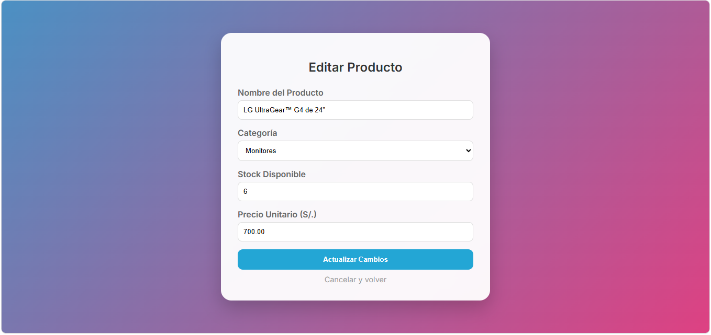
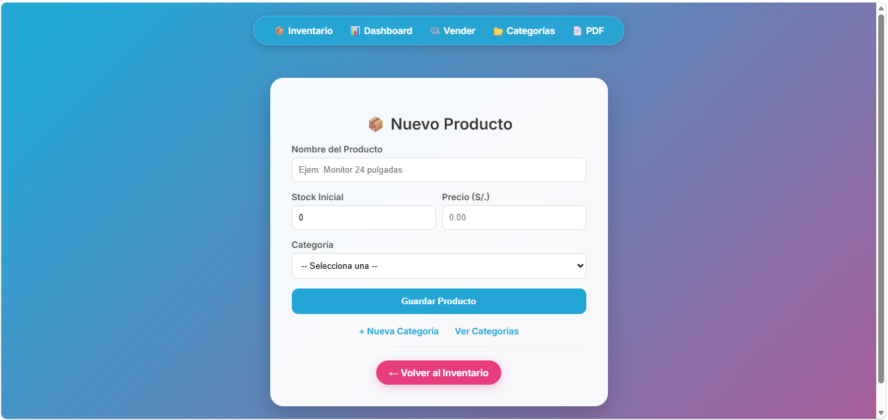
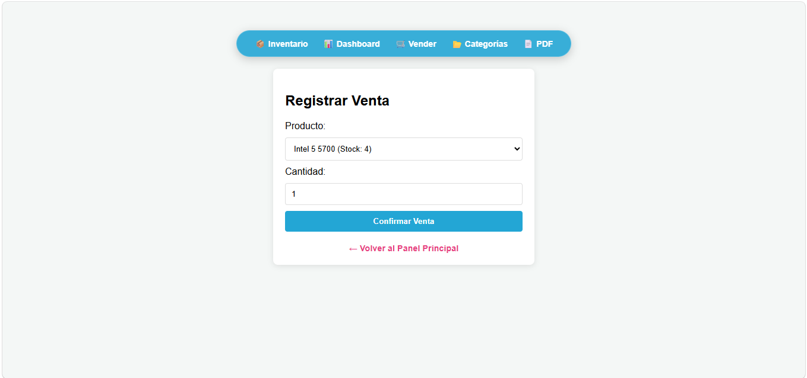
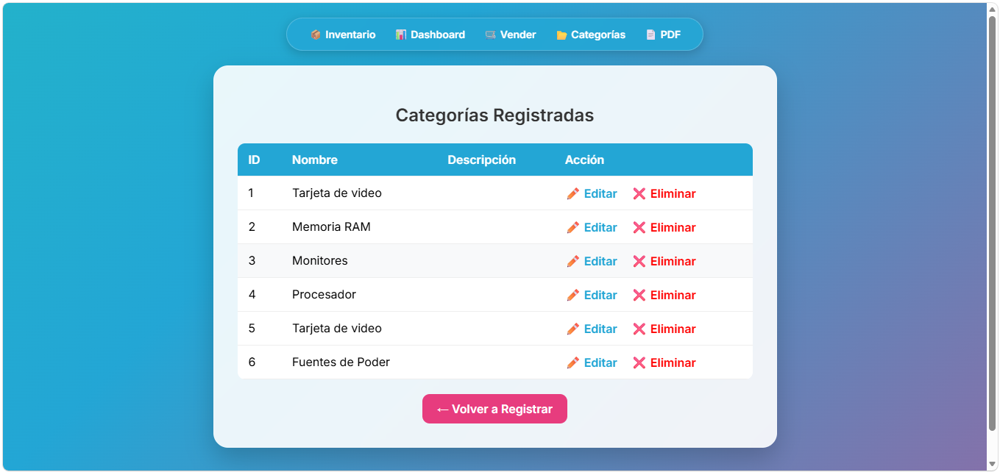

Nexus Stock IA
Optimización de inventarios mediante redes neuronales para Caja Huancayo








Sobre el proyecto
Este sistema fue desarrollado para optimizar la gestión de inventarios mediante el uso de redes neuronales. Permite predecir la demanda de productos, generando alertas de stock crítico en tiempo real para evitar quiebres de inventario.
Tecnologías utilizadas
- Python & TensorFlow: Implementación de redes neuronales para predicción.
- PHP & PostgreSQL: Gestión de base de datos y backend del sistema.
- Pandas: Procesamiento de datos históricos de ventas.
- StarUML: Documentación de casos de uso y diagramas de sistema.